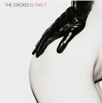
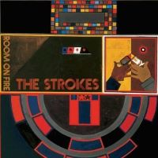
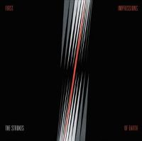
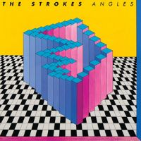
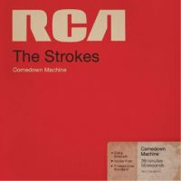
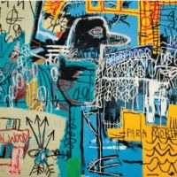

is this it
indie rock, 2001
- is this it (2:31)
- the modern age (3:28)
- soma (2:33)
- barely legal (3:54)
- someday (3:03)
- alone, together (3:08)
- last nite (3:13)
- hard to explain (3:44)
- new york city cops (3:31)
- trying your luck (3:22)
- take it or leave it (3:16)
|

room on fir
indie rock, 2003
- what ever happened? (2:49)
- reptilia (3:35)
- automatic stop (3:21)
- 12:51 (2:33)
- you talk way too much (2:58)
- between love & hate (3:10)
- meet me in the bathroom (2:56)
- under control (3:02)
- the way it is (2:17)
- the end has no end (3:00)
- i can't win (2:34)
|

first impressions of earth
indie rock, 2005
- you only live once (3:09)
- juicebox (3:17)
- heart in a cage (3:27)
- razorblade (3:29)
- on the other side (4:38)
- vision of division (3:57)
- ask me anything (3:12)
- electricityscape (3:33)
- killing lies (3:50)
- fear of sleep (4:00)
- 15 minutes (4:34)
- ize of the world (4:29)
- evening sun (3:06)
- red light (3:11)
|

angles
indie rock, 2011
- machu picchu (3:32)
- under cover of darkness (3:57)
- two kinds of happyness (3:44)
- you're so right (2:34)
- taken for a fool (3:25)
- games (3:52)
- call me back (3:03)
- gratisfaction (2:59)
- metabolism (3:05)
- life is simple in the moonlight (3:11)
|

comedown machine
indie rock, 2013
- tap out (3:42)
- all the time? (3:01)
- one way trigger (4:02)
- welcome to japan (3:50)
- 80's comedown machine (4:58)
- 50/50 (2:43)
- slow animals (4:20)
- partners in crime (3:21)
- chances (3:36)
- happy ending (2:52)
- call it fate, call it karma (3:24)
|

the new abnormal
indie rock, 2020
- the adults are talking (5:09)
- selfless (3:42)
- brooklyn bridge to chorus (3:55)
- bad decisions (4:53)
- eternal summer (6:15)
- at the door (5:10)
- why are sundays so depressing (4:35)
- not the same anymore (5:37)
- ode to the mets (5:51)
|